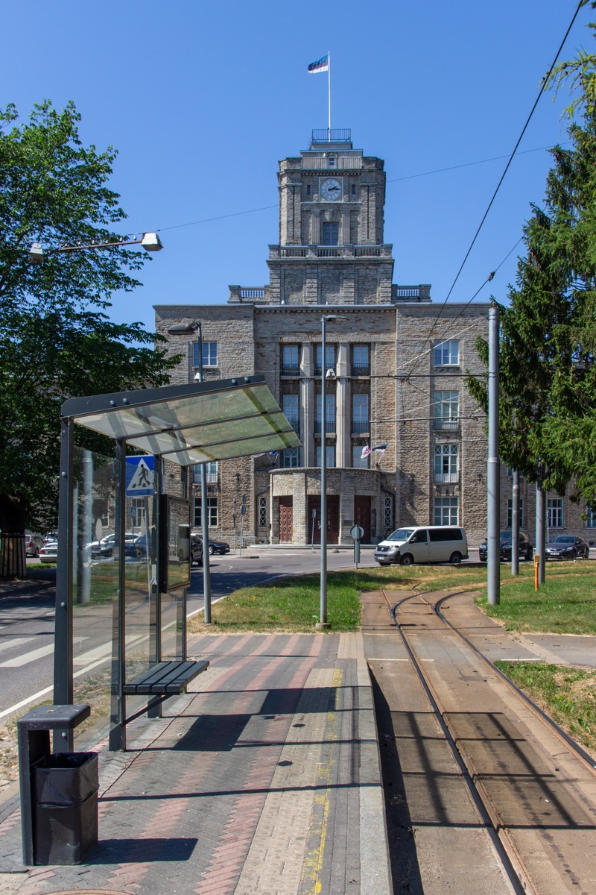
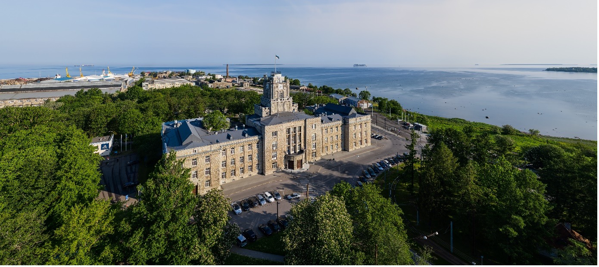

Welcome to Tallinn!
Tallinn is a mix of medieval atmosphere and modern technology. Founded in the early 13th century, Tallinn is home to an important seaport and offers a definite medieval character in many parts of the city, especially around its heritage-listed Old Town area. With a maze of winding cobblestone alleyways, endless church spires towering into the sky, and well-preserved fortresses and turrets, Tallinn celebrates its rich heritage at every possible opportunity.
Visit Tallinn ( www.visittallinn.ee ) is the city’s official tourism portal where you can find useful advice on what to do and see in the city, top events and plenty of tips on the best places to eat, have drinks and visit during your stay.

Conference Venue
The conference will be held at the TalTech Maritime Academy building, located at the northern tip of the Kopli peninsula in Tallinn.
The majestic limestone building was built in the 1920s to serve as the headquarters of the Russian-Baltic shipyard. Soon after, it became the location of the Tallinn Technical College (Tallinna Tehnikumi). The building is of symbolic significance for our university: Tallinn University of Technology was founded in 1936 as a continuation of the Technical College.

The site is very well served by public transport: Trams number 1, 2 and 5 connect it to the very center of Tallinn and the old town. It is the terminus station, the above picture is shows the building from the tram stop. Below you can see the route from Tallinn central train station (Balti Jaama).
Kopli is a site of great natural beauty, with sea views, plenty of parks and nature within walking distance.
